|
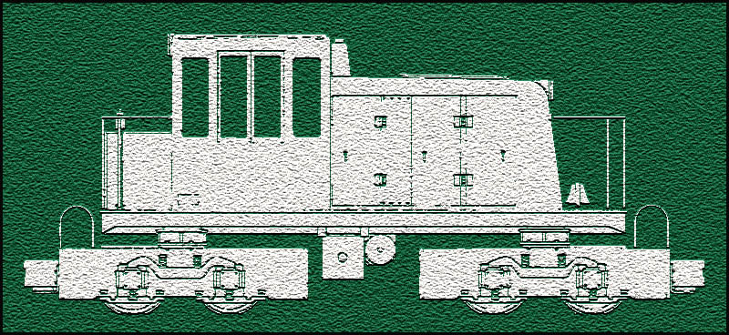
The "Big" diesels of the
modern
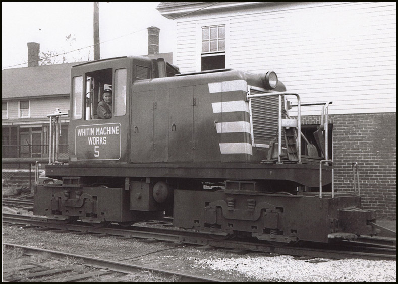 Mike Mueller Collection, from Bobs Photos.........
In 1949, three 2-foot gauge
diesel locomotives were built by GE in Schenectady, NY.
(I found an on-line
reference that said they were built at Erie..but that is incorrect, the
builders plates say Schenectady.)
The three locomotives were built for the Whitin Machine Works, were built new as 2-foot gauge locomotives, and are the only 3 locomotives of this specific design ever built. 23 ton
Today they are 84" wide (7
feet) due to the side walkways on #1 and #2 that were added
The numbering scheme of the
three locmotives while at Whitin is currently unknown, but we can see by
the above photo that one of them was given the number 5.
The three units toiled in relative obscurity inside the Whitin Machine Works until 1967, when Whitin closed its doors for good. The three units were then put up for sale. They all quickly found new careers! Locomotive #1 (the current
#1) was brought to Edaville in 1967.
Locomotive #3 (the current #3) took a more adventurous path than her two sisters..She was used by "Steam Village Railroad" in Gilford, NH for a time in the 1970's. Number 3 also once belonged to "Koppers"..a railroad tie manufacturer. Im not sure of the exact dates for #3's Koppers and "Steam Villiage Railroad" careers, but its clear she must have worked for "Steam Village Railroad" first, then Koppers, because today her cab side is still lettered for Koppers. Finally, in 1980, number 3 was ready to settle down and join her two sisters at Edaville, but sadly, she was severely damaged by a low bridge during the move by truck to Edaville in 1980, she was not repaired and never operated again. Today, all three locomotives still exist! # 2 remains at Edaville to this day, and is still operating. # 1 was moved to the Maine
Narrow Gauge Museum in Portland Maine on September 19, 1993
The damaged # 3 was also
moved to Portland, where she continues to be used as a parts source for
her two operating sisters.
A short article about these
engines, with "as built" drawings, appeared in the November 1974 issue
of Railroad Model Craftsman. A second article appeared in the April 1983
issue of RMC:
I visited the MNGRR in Portland
on August 14, 2004, and took many detail shots of Diesel 1 as an
My pictures were shot on
film, and it was an overcast, cloudy day, as a result, shadow detail was
lacking...so I had to mess with the contrast and lightness to bring out
details...as a result, many of these photos appear a bit murky..but I did
that purpose so the detail can be seen for modeling..
On to the pictures! :) 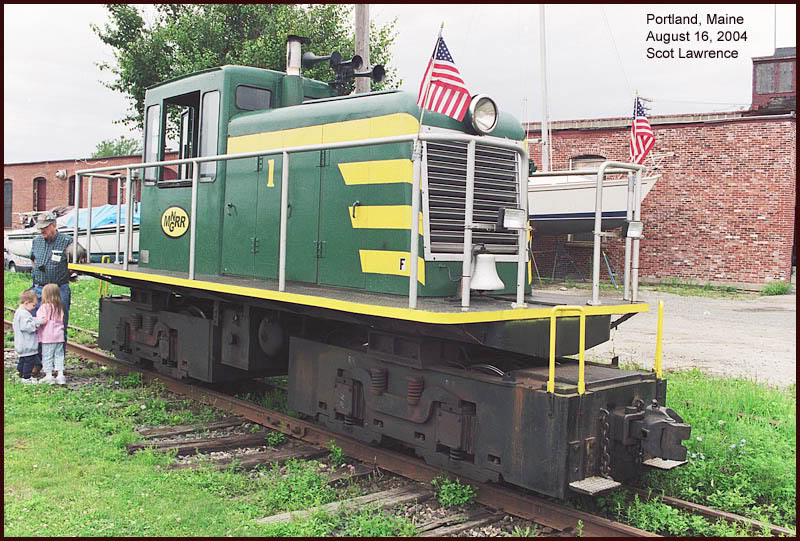
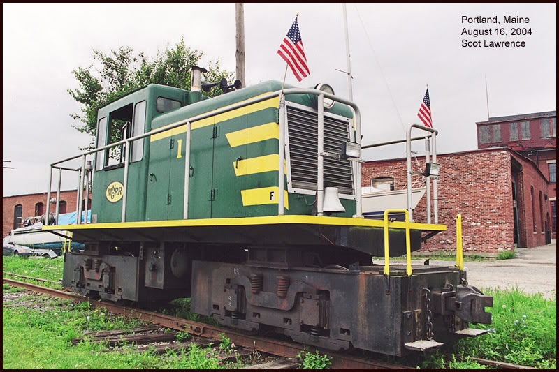
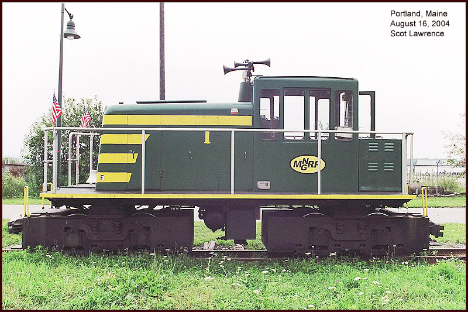
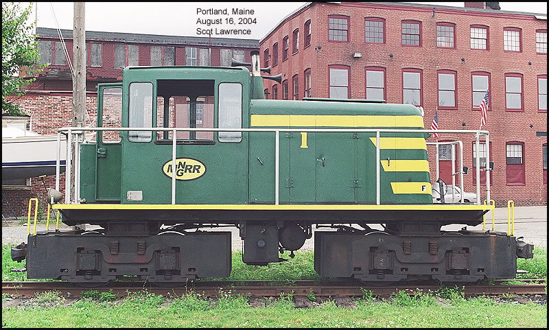
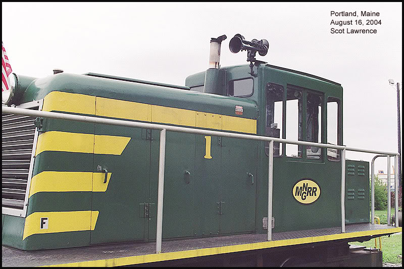
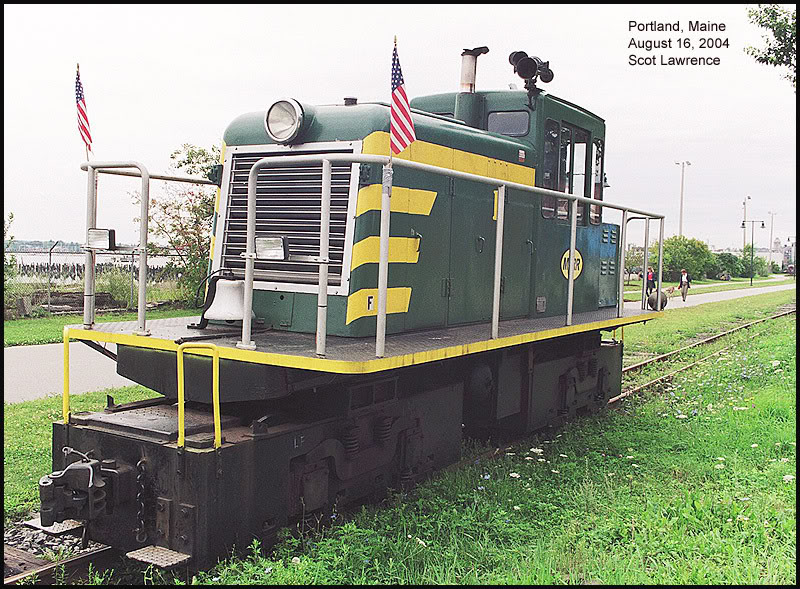
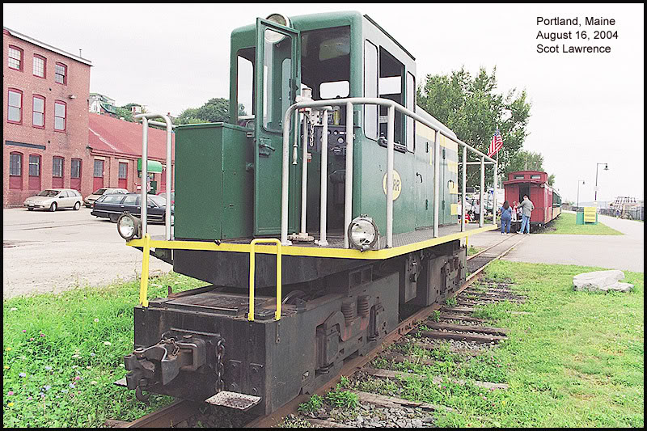
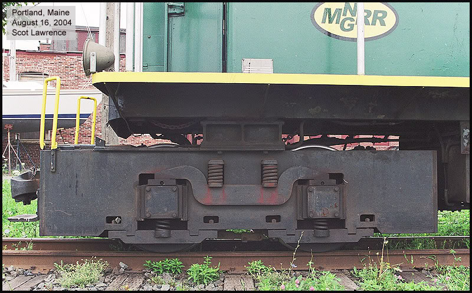
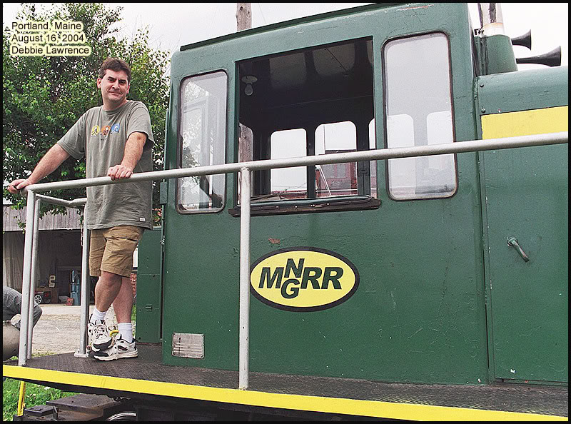
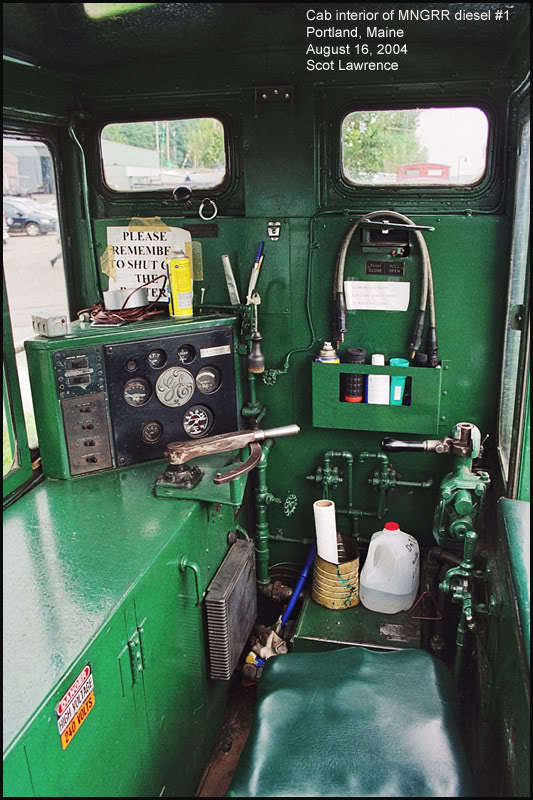
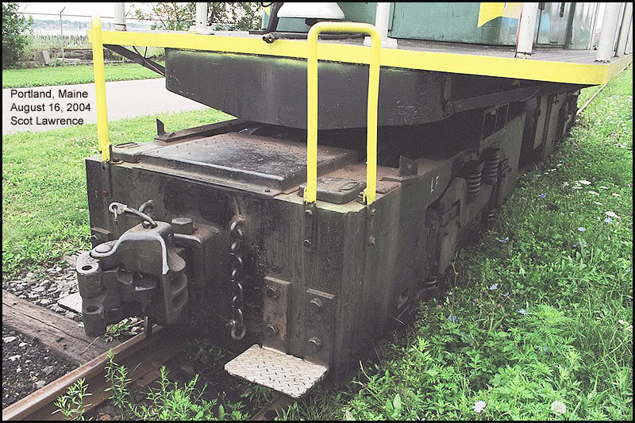
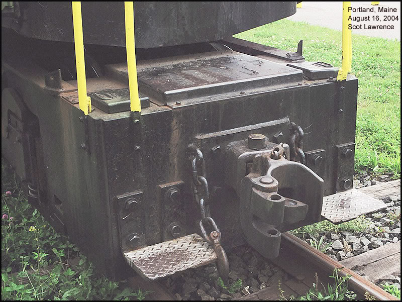
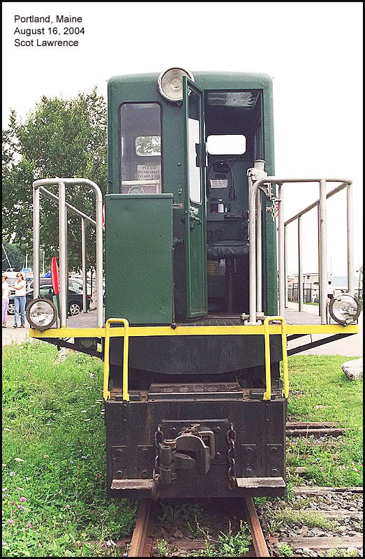
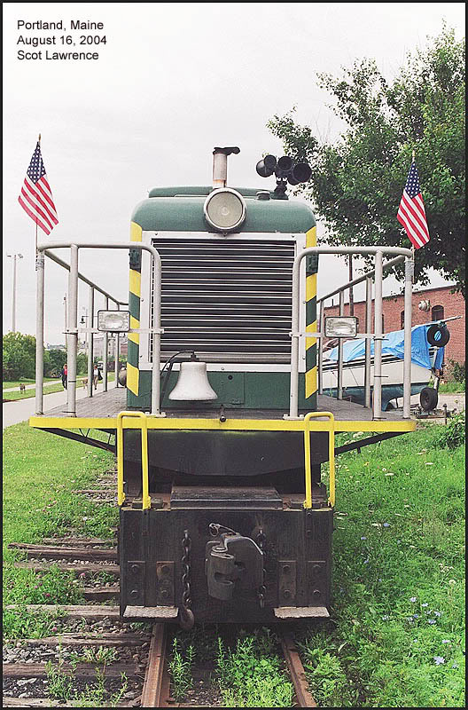
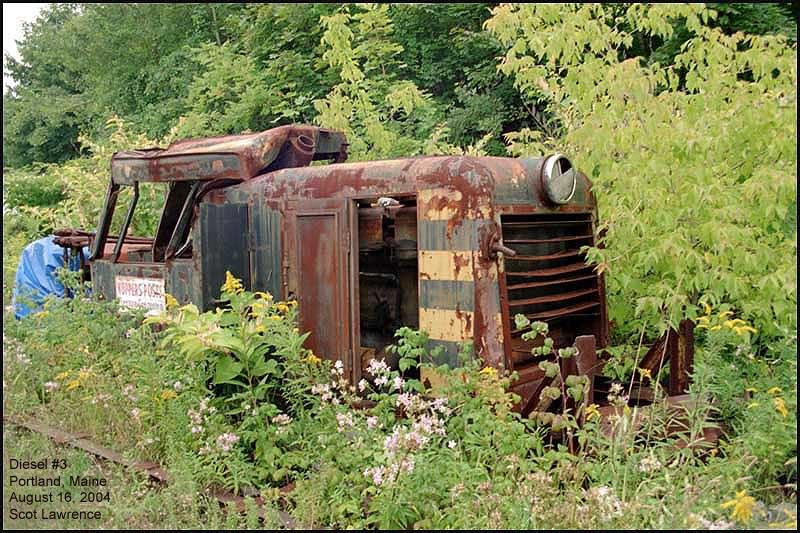 The sad remains of diesel 3. But she donates parts so that her sisters may live. 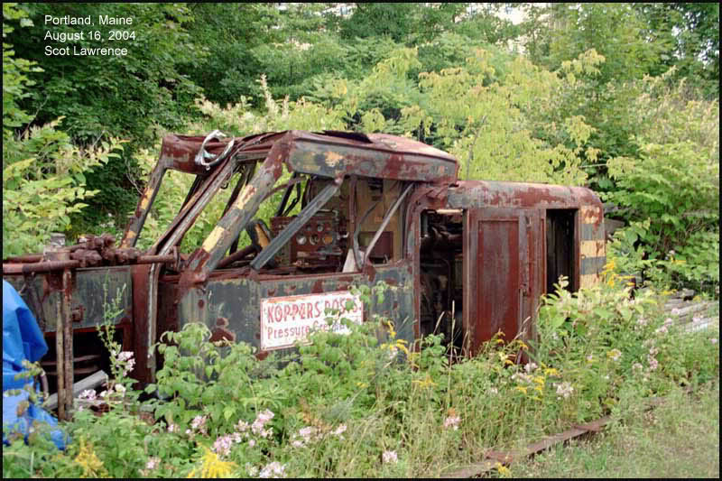
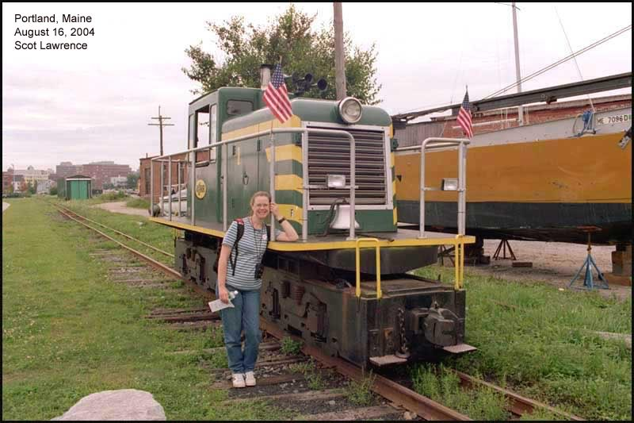
thats it! :) If
anyone knows more details about the history of these engines, please let
me know!
thanks,
Related Links: Moving from Edaville to Portland builders
plate of Locomotive 2
For lots more info on the Maine 2-footers. the real thing, and modeling them: The museums and historical societies, 2-foot related. Wiscasset, Waterville, and Farmington Railway oh yeah..and why did I refer to these three locomotives as "Big"? as in: The "Big" diesels of the modern New England 2-footers? Because even though they
are very SMALL locomotives,
as locomotives go, they are the LARGEST diesels ever used on American 2-foot
railroads! There are many very small "critters" in use by the various 2-foot
museums and historical societies, small 4-wheel gas Whitcombs and the like,
but these three GE's represent the only real "mainline" diesel power of
the American 2-footers..the type of locomotives that might have
been used by the real 2-footers as mainline power if any had survived beyond
WWII and into the diesel era..that makes them the BIG diesels of the Modern
New England 2-footers! :)
Update!
I said at the top of this page: (I found an on-line reference that said they were built at Erie..but that is incorrect, the builders plates say Schenectady.) I assumed that if the plate says Schenectady, the unit was built at Schenectady, and not Erie. I later recieved an email stating that is incorrect..even though the plate says Schenectady, the units were actually built at Erie...hmm..I dont know. Were all GE switchers built
at Erie? even though the plates say Schenectady?
Or..were some switchers actually
built at Schenectady..(and those plates say Schenectady on them)
several posibilities: 1. all units built at Erie, but all plates say Schenectady anyway. (because GE was based in Schenectady) 2. some built in Schenectady, some in Erie, but all plates say Schenectady anyway. 3. some built in Erie, some
in Schenectady, and plates reflect the place unit was built.
number 3 seems the most logical
to me,
I dont know the answer!
So I posted a question on the GE forum at railroad.net I recieved a reply stating: Scot: The Second Diesel Spotters Guide has a brief sentence on page GE-137 which says "Heavy Locomotives have always been produced at the GE plant at Erie, Pa. Light locomotives were produced for a period at GE's Schenectady plant." Not definitive for this locomotive but makes it plausible. Bill thats helps!
http://www.wpyr.com/railfancorner/engineplate.html From this locomotive: http://www.whitepassfan.net/whitepass/engines/dieselengines/class90/93.html Built in 1956, only 7 years after the three 2-footer GE's. Based on the builders plate
evidence, and the book that states "Light
locomotives were produced for a period at GE's Schenectady plant."
In my opinion it is very logical to conclude that the three 2-foot GE's
were
So there it is..im going
to presume "built at Schenectady"..since that seems the most logical based
on all the evidence...unless proven otherwise.
|
{kind=link}
{kind=link}